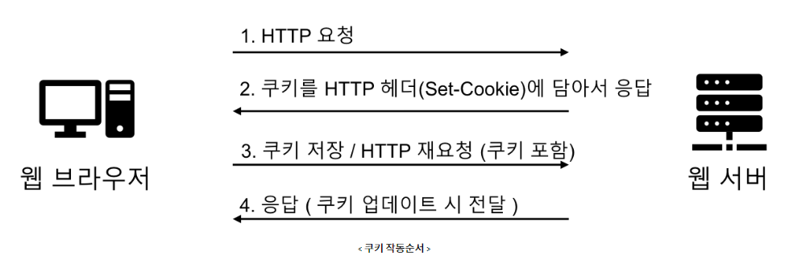
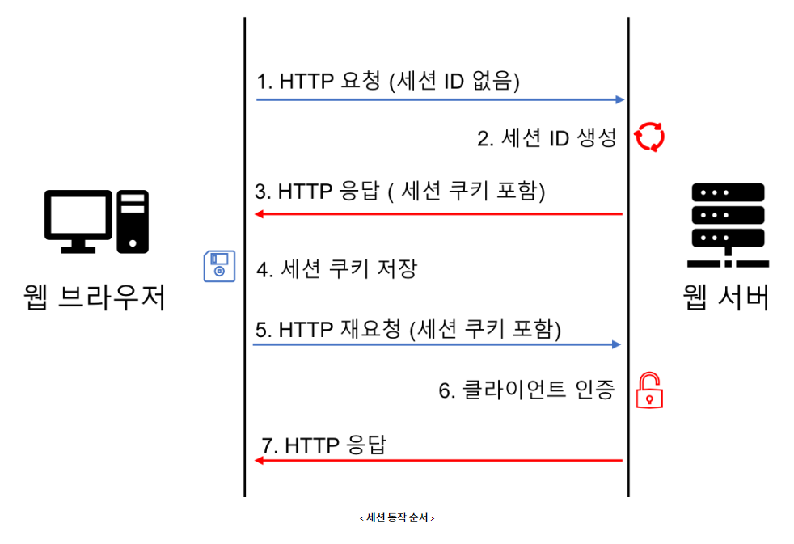

Connectionless
HTTP 프로토콜은 클라이언트의 요청에 대한 응답을 하고 나면 해당 클라이언트와의 연결을 지속하지 않는다. → HTTP 통신은 stateless하다.
HTTP의 stateless 란?
HTTP에서 stateless 하다는건 서버 입장에서 클라이언트의 상태가 없다는 의미로 동일한 클라이언트 요청이라도 매번 각 요청은 독립적이라는 의미이다.
예를 들어 놀이공원(서버)에서 손님이 입장했다(요청)가 퇴장했을 때 손님들을 한명 한명 다 기억할 수 없다. 그렇기 때문에 놀이공원에서는 재입장하는 손님을 구분하기 위해 팔찌같은 입장권을 준다.
마찬가지로 서버에서도 이미 요청을 했었던 클라언트인지 매번 확인하기 어렵기 때문에 입장권처럼 쿠키를 주는 것이다.
Cookie
- 생성된 쿠키는 클라이언트의 웹브라우저에 저장
- 웹사이트에 접속할 때 생성되는 정보를 담은 임시파일 (4KB)
- ID 기억 - 다음에 접속시 별도의 절차없이 빠르게 연결
- 쿠키 삭제는 시간을 0으로 셋팅
- 사생활 침해
- 팝업창의 오늘 하루 창 띄우지 않음
- 새로고침으로 조회수 늘리는 걸 방지할 때
- 최근 본 목록
HTTP 쿠키 작동방식

- 쿠키생성
Cookie cookie = new Cookie("쿠키명", 값); cookie.setMaxAge(3);//초 단
예시 코드
- 로그인 버튼을 누름을 통해 id와 pwd를 post로 넘긴다.
<tr align="center"> <td colspan="2" height="20"> <button type="submit" id="logInBtn">로그인</button> <button type="button" id="joinBtn" onclick="location.href= './memberWriteForm.jsp'">회원가입</button> </td> </tr> <script> $(function(){ $('#logInBtn').click(function(e){ e.preventDefault(); // 기본 폼 제출 동작 막기 $('#idDiv').empty(); $('#pwdDiv').empty(); let id = $('#id').val(); let pwd = $('#pwd').val(); if(id == ''){ $('#idDiv').html('아이디를 입력하세요'); } else if(pwd == ''){ $('#pwdDiv').html('비밀번호를 입력하세요'); } else { $.ajax({ type: 'POST', url: './memberLogin.jsp', dataType: 'json', data: { id: id, pwd: pwd }, success: function(response) { if (response.trim()=='fail') { alert('로그인 실패'); } else { alert(response.trim()+'님 로그인'); $('span').html() } }, error: function(e) { console.log(e); } }); } }); }); </script> - 로그인 정보가 유효하면 쿠키를 만들어서 response에 담아
loginOK.jsp로 보낸다<%@ page language="java" contentType="text/html; charset=UTF-8" pageEncoding="UTF-8"%> <%@ page import="member.*, java.net.URLEncoder" %> <% String id = request.getParameter("id"); String pwd = request.getParameter("pwd"); if (id != null && pwd != null) { MemberDAO memberDAO = MemberDAO.getInstance(); String userName = memberDAO.userLogin(id, pwd); if(userName == null){ response.sendRedirect("./loginFail.jsp"); } else { // 중요한 데이터는 주소 표시줄에 ㅡ보내지 말자 //response.sendRedirect("./loginOK.jsp?name=" + URLEncoder.encode(userName, "UTF-8")); // 쿠키 Cookie cookie = new Cookie("memName", URLEncoder.encode(userName, "UTF-8")); cookie.setMaxAge(10); // 10 seconds // 클라이언트 웹 브라우저에 저장 response.addCookie(cookie); Cookie cookie2 = new Cookie("memId", URLEncoder.encode(id, "UTF-8")); cookie2.setMaxAge(10); // 10 seconds // 10초 유지 // 클라이언트 웹 브라우저에 저장 response.addCookie(cookie2); // 세션 response.sendRedirect("./loginOK.jsp"); } } %> loginOK.jsp에서는 쿠키의 정보들을 받아서, 쿠키들의 정보를 출력한다.<%@ page language="java" contentType="text/html; charset=UTF-8" pageEncoding="UTF-8"%> <% //String userName = request.getParameter("name"); //String userId = request.getParameter("id"); String userName = null; String userId = null; // 쿠키 받아오기 Cookie[] arr = request.getCookies(); // 특정 쿠키만을 가져오지 못하고, 모든 쿠키들을 가져온다. if(arr==null){ // 만약 쿠키 시간이 만료돼서 사라졌을 때 }else{ for(int i=0;i<arr.length;i++){ String cookieName = arr[i].getName(); String cookieValue = arr[i].getValue(); // 쿠키 값 System.out.println("쿠키명 : "+cookieName); System.out.println("쿠키값 : "+cookieValue); System.out.println(); if(cookieName.equals("memName")) userName=arr[i].getValue(); if(cookieName.equals("memId")) userId=arr[i].getValue(); } } %> <%=userName %> result : 쿠키명 : memId 쿠키값 : dudtn9498 쿠키명 : JSESSIONID 쿠키값 : E426889423BD0D946EBAED1F39D8720B 쿠키명 : Idea-9fc80baf 쿠키값 : b414214d-17e9-4610-b439-57be0b137a3f- 이때 특정 쿠키만을 받아오지 못하고, 모든 쿠키들을 가져와야 한다.
Session
- 세션이랑 통신을 하기 위해 서로 연결된 순간부터 통신을 마칠때까지의 기간을 의미한다.
- HTTP 세션이란 클라이언트가 웹서버에 연결된 순간부터 웹 브라우저를 닫아 서버와의 HTTP 통신을 끝낼 때까지의 기간이다.
- 하지만 보통 세션이라고 말할 때는 서버에 세션에 대한 정보를 저장해놓고, 세션 쿠키를 클라이언트에게 주어 서버가 클라이언트를 식별할 수 있도록 하는 방ㅅ식 자체를 의미하는 경우가 많다.
- 웹서버쪽의 웹컨테이너에 상태를 유지하기 위한 정보가 저장
- 세션은 기본 시간 1800초(30분)
- 각 클라이언트 고유 Session ID를 부여한다
- Session ID로 클라이언트를 구분하여 각 클라이언트 요구에 맞는 서비스 제공
- 세션 생성
HttpSession session = request.getSession(); session.setMaxInactiveInterval(30*60); //초 단위
- 세션 부여
session.setAttribute("세션명“, ”값“)
- 세션 얻어오기
session.getAttribute("세션명“)
- 세션 삭제
session.removeAttribute("세션명“)
- 모든 세션 삭제 - 무효화
session.invalidate()
세션 작동방식
- 세션의 작동방식을 보면 우선 클라이언트가 서버에 요청을 보내면 서버에서는 요청헤더(Cookie).를 확인하고 세션 ID가 있는지 확인한다.
- 만약 요청에 세션ID가 없다면 서버엣거는 세션 ID를 생성한 뒤 응답을 보낼 때 쿠키에 세션ID를 담아 보낸다.
- 클라이언트는 응답에서 받은 세션 쿠키(세션 ID값)를 저장해두고, 매번 해당 서버에 요청을 보낼때마다 세션 쿠키를 함께 보내서 자신이 누구인지 인증한다. 세션 쿠키는 브라우저가 종료되면 삭제된다.

예시 코드
- 로그인 Post 진행
<script src="http://code.jquery.com/jquery-latest.min.js"></script> <script> $(function(){ $('#logInBtn').click(function(e){ e.preventDefault(); // 기본 폼 제출 동작 막기 $('#idDiv').empty(); $('#pwdDiv').empty(); let id = $('#id').val(); let pwd = $('#pwd').val(); if(id == ''){ $('#idDiv').html('아이디를 입력하세요'); } else if(pwd == ''){ $('#pwdDiv').html('비밀번호를 입력하세요'); } else { $.ajax({ type: 'POST', url: './memberLogin.jsp', dataType: 'text', //서버로부터 받는 타입, 'text' or 'xml' or 'json' data: { 'id': id, 'pwd': pwd }, success: function(data) { //alert(data.trim()); if(data.trim() == 'fail') alert("아이디 또는 비밀번호가 틀렸습니다.") else { alert(data.trim()+"님 로그인"); $('span').text(data.trim()); //location.href = '../index.jsp'; } }, error: function(e) { console.log(e); } }); } }); }); </script> - 서버 딴에서 로그인 처리 진행
String id = request.getParameter("id"); String pwd = request.getParameter("pwd"); if (id != null && pwd != null) { MemberDAO memberDAO = MemberDAO.getInstance(); String userName = memberDAO.userLogin(id, pwd); if(userName == null){ response.sendRedirect("./loginFail.jsp"); } else{ // 세션 방식 // HttpSession session = request.getSession(); // 에러가 남 => JSP의 내장객체이기 때문에 session을 선언하면 Duplicate 에러가 뜬다ㅏ , 고로 그냥 갖다 쓰면된다. session.setAttribute("memName", userName); session.setAttribute("memId", id); response.sendRedirect("./loginOK.jsp"); } }- 사용자 정보가 있을 경우에,
setAttribute를 통해 세션을 얻어와서 저장을 진행한다.session.setAttribute("memId", id); session.setAttribute("memName", userName); - 세션 속성을 설정할 때는 웹 애플리케이션의 요구 사항과 사용자와 관련된 데이터를 어떻게 처리할지에 따라 기준이 달라진다
- 사용자의 식별 정보
- 기준: 로그인 후 특정 사용자를 지속적으로 추적해야 하는 경우.
session.setAttribute("userId", userId); session.setAttribute("userName", userName); - 사용자 권한 정보
- 기준: 특정 페이지나 기능에 접근할 때 권한이 필요한 경우.
session.setAttribute("userRole", "admin"); - 세션이 필요한 데이터의 지속성
- 기준: 특정 데이터가 여러 페이지 간에 지속적으로 필요할 때.
- 일시적으로 필요한 사용자 설정
- 기준: 특정 사용자 설정이나 일시적인 데이터가 있을 때.
session.setAttribute("theme", "darkMode"); session.setAttribute("language", "en");
- 사용자의 식별 정보
- 사용자 정보가 있을 경우에,
- 로그아웃
<%@ page language="java" contentType="text/html; charset=UTF-8" pageEncoding="UTF-8"%> <% // 세션 session.removeAttribute("memName"); session.removeAttribute("memId"); %> <!DOCTYPE html> <html> <head> <meta charset="UTF-8"> <title>Insert title here</title> </head> <body> <script> window.onload = function(){ alert("로그아웃"); location.href = "../index.jsp" } </script> </body> </html - 메인 페이지
<%-- index.jsp --%> <%@ page language="java" contentType="text/html; charset=UTF-8" pageEncoding="UTF-8"%> <!DOCTYPE html> <html> <head> <meta charset="UTF-8"> <link rel="icon" href="data:,"> <title>메인화면</title> <style> body { font-family: Arial, sans-serif; background-color: #f5f5f5; color: #333; display: flex; justify-content: center; align-items: center; height: 100vh; margin: 0; } .container { text-align: center; background-color: #fff; padding: 30px 50px; border-radius: 10px; box-shadow: 0px 0px 10px rgba(0, 0, 0, 0.1); } h2 { margin-bottom: 20px; color: #4CAF50; } h3 { margin: 10px 0; } a { display: inline-block; text-decoration: none; color: #fff; background-color: #4CAF50; width: 300px; padding: 10px 20px; border-radius: 5px; transition: background-color 0.3s ease; } a:hover { background-color: #45a049; } </style> </head> <body> <% if (session.getAttribute("memId") == null) { %> <div class="container"> <h2>메인화면</h2> <h3><a href="./member/memberWriteForm.jsp">회원가입</a></h3> <h3><a href="./member/memberLoginForm.jsp">로그인</a></h3> <h3><a href="#">목록</a></h3> </div> <% } else { %> <div class="container"> <h2>메인화면</h2> <h3><a href="./member/memberLogout.jsp">로그아웃</a></h3> <h3><a href="#">글쓰기</a></h3> <h3><a href="#">목록</a></h3> </div> <% } %> </body> </html>if (session.getAttribute("memId") == null)를 통해 세션의 유무를 확인해서 세션이 없을 경우에는 회원가입, 로그인, 목록을 나타나게 하고, 있을 경우에는 로그아웃, 글쓰기, 목록을 뜨게 한다.
쿠키와 세션의 관계
- 흔히 쿠키와 세션을 비교할 때 쿠키는 클라이언트에 정보를 저장하는 것이고 세션은 서버에 정보를 저장하는 것이다 라고 비교한다.
- 맞는 말이지만 마치 서로 반대되는 개념처럼 오해할 수 있는데, 결국 세션은 쿠키를 이용하는 하나의 방식을 뿐이다
- 쿠키는 stateless한 HTTP 통신에서 클라이언트에게 정보를 주어 해당 클라이언트를 식별하기 위해 만들어졌다.
- 클라이언트가 식별이 가능해야 서버는 특정 클라이언트와 계속해서 통신을 하고 있는지 확인이 가능하기 때문이다.
- 하지만 클라이언트에 저장된다는 쿠키의 특징은 보안에 있어서는 치명적인 단점이다.
- 예를 들어 로그인을 위해 사용자가 입력한 아이디와 비밀번호를 쿠키에 담아 클라이언트에 저장한 뒤 서버에서는 쿠키로 해당 사용자가 로그인한 사용자인지 확인한다고 생각해보자.
- 그러면 누군가 마음만 먹으면 쿠키를 확인해 클라이언트에 저장된 아이디와 비밀번호를 볼 수 있다.
- 그래서 세션이라는 개념을 통해 중요한 정보는 서버에서 관리하고 클라이언트에게는 세션 쿠키( 세션 ID )를 주어 식별이 가능하도록 한 것이다